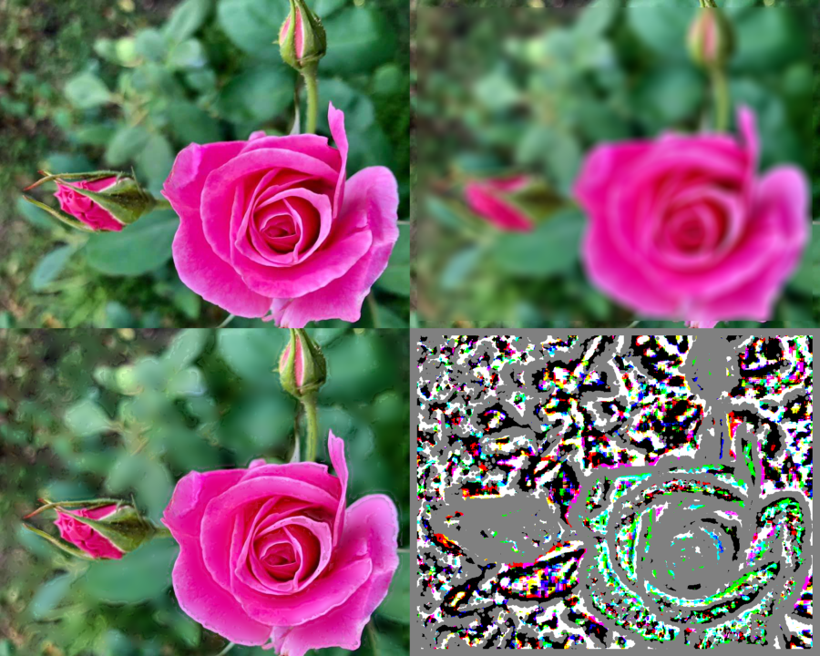

Bokeh function operates in spatial domain. One can also use F2QBokeh function of this plugin, which operates in frequency domain using a different princeple.
Photographs or videos of birds, animals, flowers etc; taken with high end cameras usually keep lesser depth of field so that the object is well in focus and background blurred beyond recognition. On the other hand most such videos taken by us do not look so good as background is only slightly blurred.
Bokeh function requires input image(clip) that is required to get Bokeh effect, and a clip containing heavily blurred version of this clip.It detects parts of image in focus and out of focus. The in focus parts are inserted into the blurred clip. Parameters grid and thresh distinguish between focus and out of focus and need critical adjustments.
Only RGB, Y and YUV444 ( no subsampling) formats are processed. Preferably input be field seperated. RGB formats give better results than YUV
| Description | Name | Type | Limits | Default |
| Input clip | clip | RGB, YUV444, Y | none | |
| Heavily blurred clip | clip | identical format of input clip | none | |
| circle with grid as radius to be used for detection | grid | integer | 2 to 64 | 25 |
| Threshold for distinguishing focus and out of focus | thresh | float | 0 to 1.0 | 0.1 |
| If rgb format input, planes to be considered | rgb | integer | 1 to 7.Add as required with r = 4, g = 2, b = 1 | 7 |
| If yuv format input, planes to be considered | yuv | integer | 1 to 7. add as required with y = 4, u = 2, v = 1 | 7 |
avisource or imagereader etc;
imagereader("c:\images\Rose.jpg",end = 100)
converttoRGB24()
# function does not check
assumefieldbased()
# uncomment any one of the next two lines
#mb= F2QBlur(psf = "focus",x = 16)
#mb = MBlur(a, x = 16, blur = "focus")
#uncomment any one of the next two lines
#bk = Bokeh(last,m, grid = 3, thresh = 0.0175, rgb = 4, yuv =1)
#bk = F2QBokeh(last, mb,grid = 16, thresh = 0.4505)
fs=subtract(bk, mb).Levels(127,1,129,0,255)
s=subtract(bk, last).Levels(127,1,129,0,255)
stackHorizontal(s,fs)
b =stackHorizontal(bk,s)
a=stackHorizontal(last,mb)
stackVertical(a,b)
convertbits(8)
reduceby2()

| To my index page | down load plugin | To Avisynth |